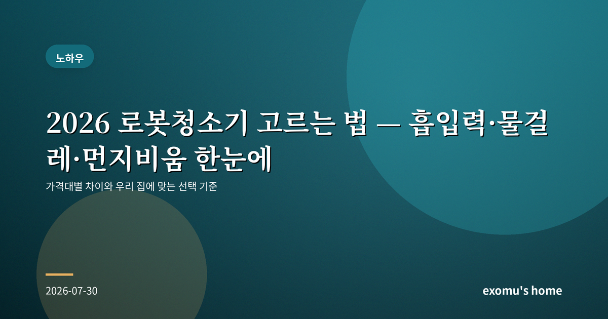
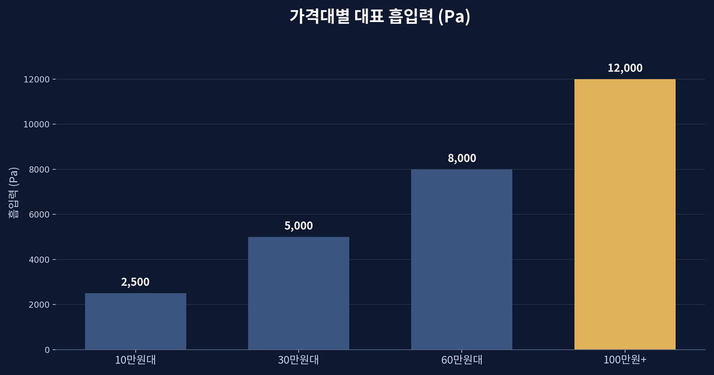
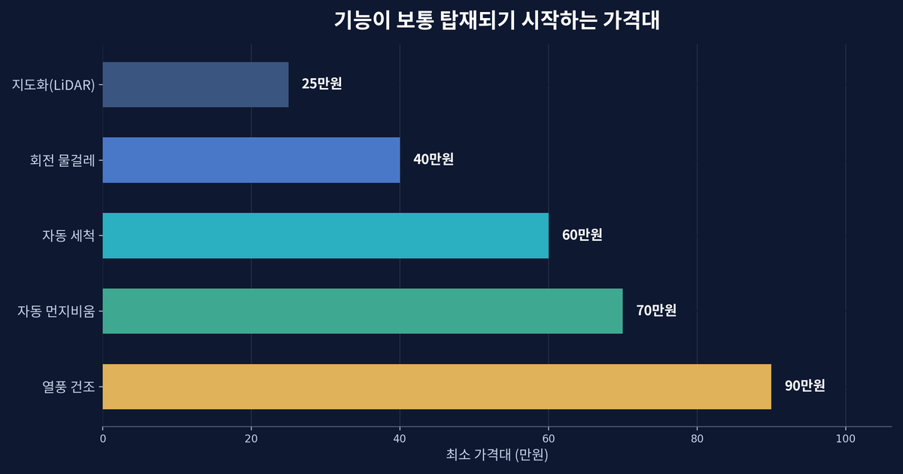
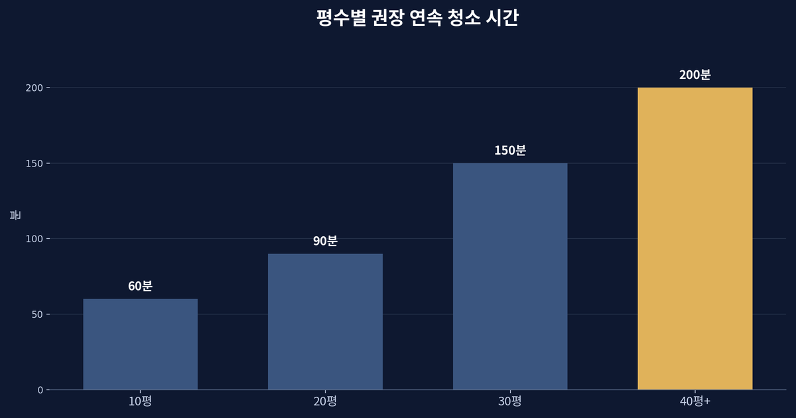
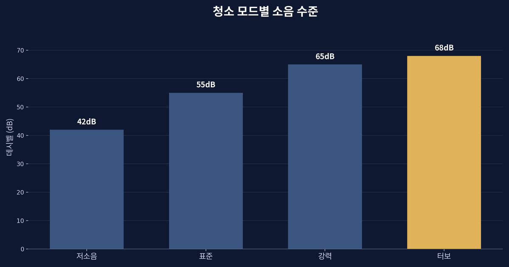

2026 로봇청소기 고르는 법 — 흡입력·물걸레·먼지비움 한눈에

로봇청소기, 이제는 필수가 되었지만
로봇청소기는 몇 년 사이 '있으면 편한 물건'에서 '없으면 아쉬운 물건'으로 자리를 옮겼다. 문제는 10만 원대부터 150만 원이 넘는 모델까지 가격 차이가 열 배를 훌쩍 넘는다는 점이다. 비싼 것이 무조건 좋은 것도, 싼 것이 무조건 손해인 것도 아니다. 우리 집 구조와 생활 패턴에 맞는 기준을 먼저 잡는 것이 중요하다. 이 글은 특정 제품을 추천하기 위한 것이 아니라, 스스로 판단할 기준을 정리하기 위한 정보성 글임을 먼저 밝혀 둔다.

첫 번째 기준: 흡입력과 주행 방식
가장 먼저 볼 것은 흡입력이다. 단위는 파스칼(Pa)로 표시하는데, 보통 4,000Pa 정도면 마루와 카펫의 일반 먼지를, 8,000Pa 이상이면 반려동물 털이나 카펫 깊숙한 먼지까지 어느 정도 감당한다. 다만 숫자가 전부는 아니다. 브러시 구조와 주행 경로가 나쁘면 흡입력이 높아도 놓치는 구역이 생긴다. 주행 방식은 크게 두 가지다. 저가형은 자이로·범퍼 센서로 부딪히며 움직이고, 중급 이상은 레이저(LiDAR)로 집 구조를 지도화해 체계적으로 청소한다. 방이 여러 개거나 가구가 많다면 지도화 기능이 체감 차이가 크다.

두 번째 기준: 물걸레와 먼지 비움
최근 모델의 경쟁은 물걸레와 자동 먼지 비움에서 갈린다. 물걸레는 단순히 걸레를 끄는 방식부터, 회전 패드로 압을 주는 방식, 오염을 감지해 스스로 세척하고 뜨거운 바람으로 말리는 방식까지 다양하다. 마루가 넓고 아이가 있다면 회전식 물걸레와 자동 세척 기능이 만족도를 크게 높인다. 자동 먼지 비움은 본체가 청소를 마치면 스테이션의 큰 먼지봉투로 쓰레기를 옮겨 담는 기능으로, 2~3주에 한 번만 봉투를 비우면 되어 손이 거의 가지 않는다. 다만 스테이션의 부피가 커서 놓을 자리를 미리 생각해야 한다.

세 번째 기준: 평수·소음·유지비
집이 넓을수록 배터리 용량과 자동 충전 후 이어서 청소하는 기능이 중요하다. 20평 이하라면 대부분의 중급 모델로 충분하지만, 30평이 넘으면 대용량 배터리와 이어 청소 기능을 확인하는 것이 좋다. 소음도 무시할 수 없다. 최대 흡입 모드에서는 65데시벨을 넘는 모델이 많아, 재택근무를 한다면 예약 기능으로 외출 시간에 돌리는 편이 낫다. 유지비도 따져야 한다. 필터, 브러시, 물걸레 패드, 먼지봉투는 소모품이라 연간 몇만 원이 들 수 있으니, 소모품 가격과 구하기 쉬운지도 미리 확인하는 것이 좋다.

정리하면
결국 선택은 세 가지 질문으로 좁혀진다. 우리 집은 마루가 많은가 카펫이 많은가, 손이 얼마나 덜 가기를 바라는가, 그리고 예산은 어디까지인가. 반려동물이 있고 마루가 넓다면 높은 흡입력에 회전 물걸레와 자동 세척·먼지 비움을 갖춘 상위 모델이 값을 한다. 원룸이나 작은 집에서 먼지만 관리하면 된다면 지도화 기능을 갖춘 중급 모델로도 충분히 만족스럽다. 광고 문구의 최대 수치보다, 우리 집에서 매일 반복될 동선과 관리의 편함을 기준으로 고르는 것이 후회 없는 선택이다.